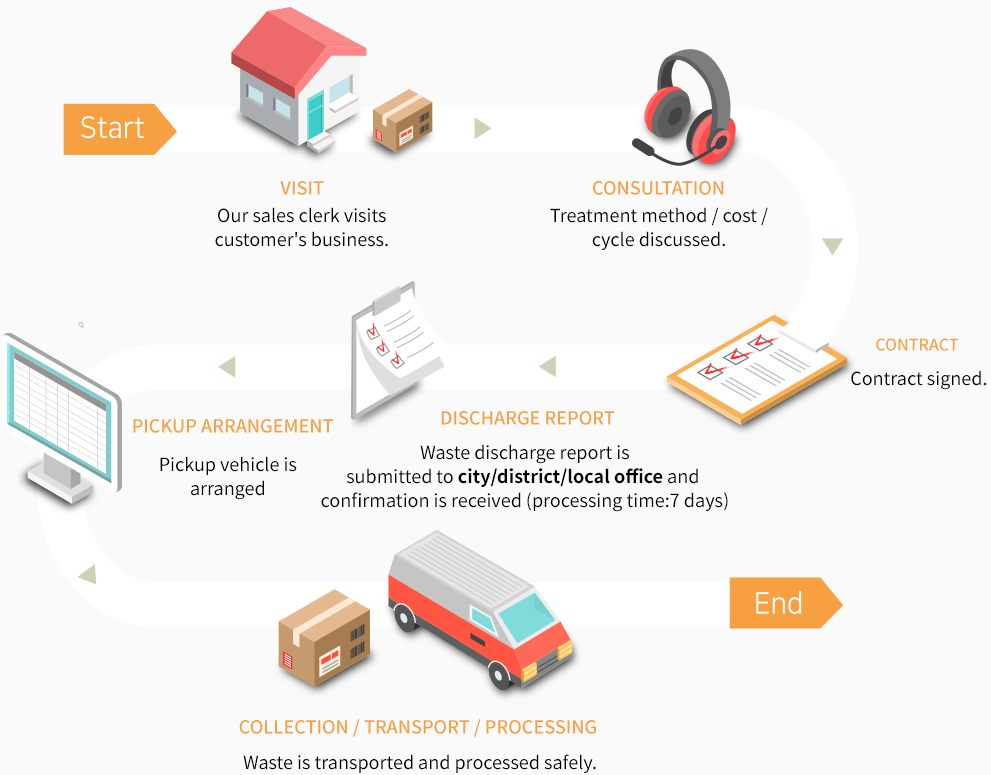
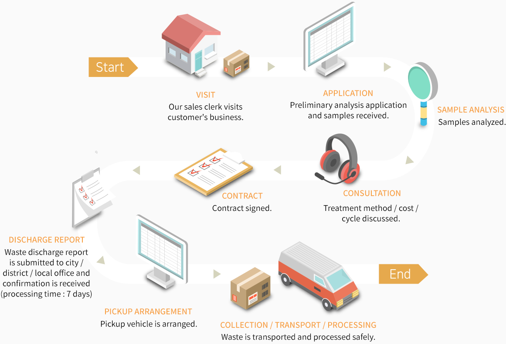

General industrial wasters refer to industrial wastes that do not contain classified harmful materials, such as vinyl, wood, fiber, paper, or sludge.
Services
- ynthetic resin wastes, synthetic rubber wastes, paper wastes, wood wastes, fiber wastes, animal/plant debris, glass fiber wastes, cooking oil wastes, and wastewater treatment sludge, processing sludge, catalyst wastes, absorbent/absorber wastes, etc that do not contain the substances classified by the Ministry of Environment.
- General waste treatment
Incinerator
This incinerator not only ensures complete combustion, but it is
environmentally-friendly designed with the gas collector to reduce
dioxin, the secondary pollutant, and minimize heavy metal and other
harmful gases.
Also, it produces new & renewable energy (steam) by making good use
of the heat from the incineration process, and the steam energy goes
mostly into our own production processes and the rest inexpensively
to the resident companies in the industrial complex, which
strengthens our business competitive power and contributes to the
conservation of energy and the reduction of greenhouse gas.
Treatment Process
- Visit : Our sales clerk visits customer's business.
- Consultation : Treatment method / cost / cycle discussed.
- Contract : Contract signed.
- Discharge Report : Waste discharge report is submitted to city/district/local office and confirmation is received (processing time:7 days)
- Pickup Arrangement : Pickup vehicle is arranged
- Collection / Transport / Processing : Waste is transported and processed safely.
Classified wastes refer to industrial wastes that contain harmful substances that can serious pollute the environment or harm the human body.
Services
- Synthetic resin wastes, synthetic rubber wastes, paper wastes, wood wastes, fiber wastes, animal/plant debris, glass fiber wastes, cooking oil wastes, and wastewater treatment sludge, processing sludge, catalyst wastes, absorbent/absorber wastes, etc that do not contain the substances classified by the Ministry of Environment.
- General waste treatment
High Temperature Incinerator
Classified wastes are processed at Korea's first rotary kiln-type incinerator(85 tons/day) that we built with W&E of Switzerland and Hyundai Precision & Engineering of Korea. lt offers better combustion efficiency that other incinerators and is environmentally-friendly designed sort and incinerate harmful matters that can be generated by classified wastes by enabling flawless pre-treatment process for the first time in Korea. Also, combustion ashes are converted into slag to manufacture pavement materials and bricks and the production of new & renewable energy from the heat during the incineration process contributes to the conservation of energy.
Treatment Process
- Visit : Our sales clerk visits customer's business.
- Application : Preliminary analysis application and samples received.
- Sample Analysis : Samples analyzed.
- Consultation : Treatment method / cost / cycle discussed.
- Contract : Contract signed.
- Discharge Report : Waste discharge report is submitted to city / district / local office and confirmation is received (processing time : 7 days)
- Pickup Arrangement : Pickup vehicle is arranged.
- Collection / Transport / Processing : Waste is transported and processed safely.
Wastwater mixed liquids from industrial activities discharged with liquid or solid pollutants.
Services
- Consigned treatment of classified liquids(acid wastes, alkaline wastes)light acid wastewater, light alkaline wastewater, coating wastewater, lab wastewater, heavy metal wastewater, pipe wastewater, printer cleaner, etc.
- Wastewater treatment solutions.
Incinerator
Our wastewater treatment facilities use flawless systems and advanced technologies and are environmentally-friendly designed to ensure 95% or higher efficiency and stable treatment process to minimize secondary pollution. Also, it uses new and renewable energy collected from the incinerator to evaporate and condense wastewater and the condensed water is reused as treatment water to save energy.
Treatment Process
- Visit : Our sales clerk visits customer's business.
- Application : Preliminary analysis application customer's business.
- Sample Analysis : Samples analyzed at lab and papers reviewed.
- Consultation : Treatment method / cost / cycle discussed.
- Contract : Contract signed.
- Discharge Report : Wastewater discharge facility installation permit application is submitted to city/district/local office and confirmation is received (processing time:7days)
- Pickup Arrangement : Pickup vehicle is arranged.
- Collection / Transport / Processing : Waste is transported and processed safely.
It tales 1.1tons of metal to build an automobile. We produce more than 2,000 tons of metal a year from recycled incinerated slag to build more than 2,000 automobile
Services
- We sell metal pieces collected from slag. We provide related information and assist you with purchasing.
We collect wastes directly from worksites and transport general wastes. classified wastes, and wastewater to treatment or final treatment plants in vehicles specially designed for each type of wastes. The collection/transport system that considers the type of wastes, storage capacity of customers, and length of storage offers specialized services for the convenience of customers. Also, the drivers participate in regular training to transport wastes swiftly and safely to minimize environmental pollution.
Services
- Collection/transport services for general wastes, classified wastes, and wastewater
- General wastes
- Synthetic resin wastes, wood wastes, fiber wastes, synthetic rubber wastes, organic sludge, animal/plant debris, salt wastes, etc
- Classified wastes
- Synthetic resin wastes, acid wastes, alkaline wastes, absorbent wastes, oil wastes, organic solvent wastes, paint wastes, pesticides wastes, organic sludge, etc
- Wastewater
- Coating wastewater, lab wastewater, heavy metal wastewater, pipe wastewater, printer cleaner, general metal wastewater, other general wastewater, etc
- Collection/transport services based on organized systems
- Safe and swift collection/transport services by training drivers
- Special vehicles designed for each type of wastes
- Free rental of waste storage containers suitable for each type of wastes, if needed.